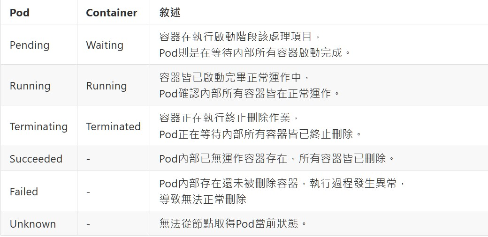

Pod的運行都會有對應執行階段，這些可稱為執行狀態讓使用者清楚當前Pod是否還活著，同樣地，Pod內部的也會運行單一或多個容器，這些容器也會有執行狀態，兩者是相互有關係驅動整體執行狀態識別。
當使用者詢問Pod當前執行狀態流程如下：
Pod與內部Container執行階段對應

使用者下達刪除Pod指令後，實際上kubelet發送給Node告知請刪除某Pod目標，有時可能不會馬上就刪除完畢，因給予命令並不是強制終止，而是請進行終止作業程序，預設等待30秒給予完成，如果逾期還未終止則進行強制終止，不管終止作業是否還在進行。
關於刪除指令參數可參考：
https://kubernetes.io/docs/reference/generated/kubectl/kubectl-commands#delete
當執行刪除操作時，調整預設等待時間從30秒變為10秒
指令刪除透過--grace-period參數
kubectl delete pod <name> --grace-period=10
OR
Yaml配置檔在spec內新增terminationGracePeriodSeconds
# 定義版本
apiVersion: v1
# 定義此為Pod設定檔
kind: Pod
metadata:
# 定義此Pod Name
name: myfirstpod2
spec:
# 設置當容器終止時，預設等待作業完成限制時間
terminationGracePeriodSeconds: 10
# 設定容器
containers:
- name: nginx
image: nginx:1.14.2
ports:
- containerPort: 80
- name: mybusybox
image: busybox
command:
- sh
- -c
- "sleep 1000000"
當執行刪除操作時，不想要等待終止作業需要立即強制刪除
指令刪除透過--force和--grace-period參數
kubectl delete pod <name> --force --grace-period=0